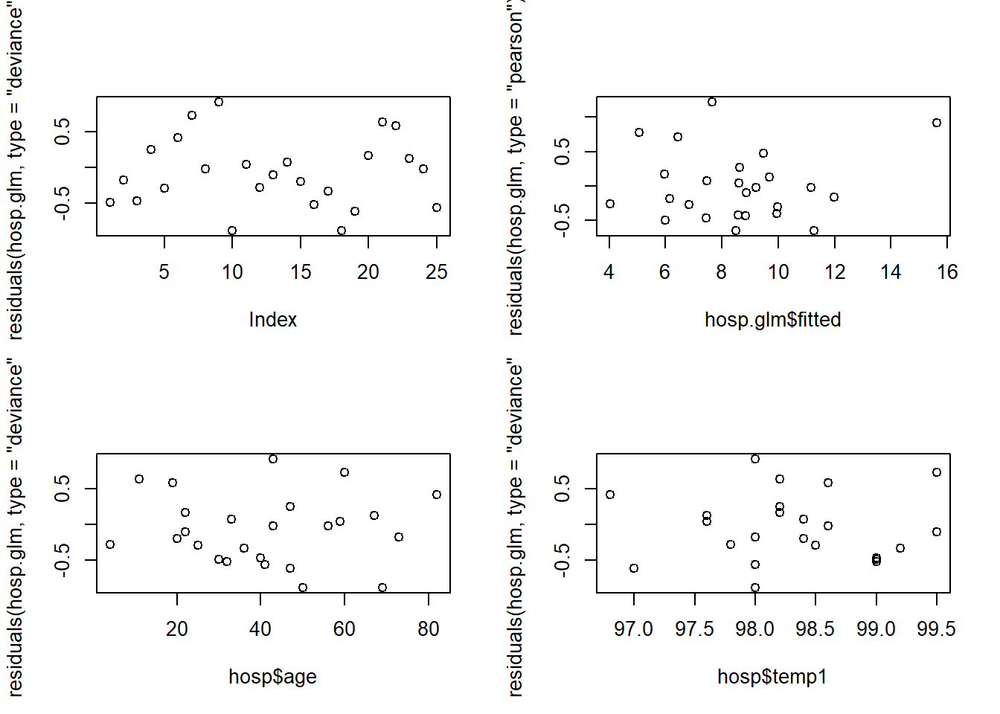
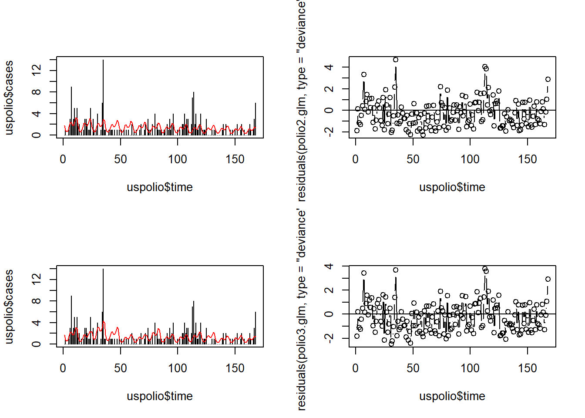

Chapter 4 Deviance
4.1 Goodness-of-Fit
We would like to find a measure for goodness-of-fit, or, to put it another way, a measure for the discrepancy between the data \(\boldsymbol{y}\in{\mathbb R}^{n}\) and the fit \(\hat{\mu}\in{\mathbb R}^{n}\), where \(\hat{\mu}_{i} = h(\boldsymbol{\beta}^{T}\boldsymbol{x}_i)\).
First we need to understand how well any GLM could be expected to fit.
4.1.1 Saturated Model
The log likelihood at the MLE \(\hat{\boldsymbol{\beta}}\) is \[\begin{equation} \ell(\hat{\boldsymbol{\beta}}) = \sum_{i} \left( \frac{y_{i}\hat{\theta}_{i} - b(\hat{\theta}_{i})}{\phi_{i}} + c(y_{i}, \phi_{i}) \right) \tag{4.1} \end{equation}\]
The larger \(\ell(\hat{\boldsymbol{\beta}})\), the better the fit, but what is large? Consider the following. In the GLM, \(\mu\), or equivalently \(\theta\), takes values in \({\mathbb R}^{n}\). However, \(\mu_{i} = h(\boldsymbol{\beta}^{T}\boldsymbol{x}_i)\). Thus, as \(\boldsymbol{\beta}\in{\mathbb R}^{p}\) varies, \(\mu = \left\{\mu_{i}\right\}\) can only trace out a \(p\)-dimensional submanifold of \({\mathbb R}^{n}\): the possible values are constrained by the model structure. (Indeed, as we saw at the beginning, this is the whole point of the model in the first place.)
An upper bound for \(\ell(\hat{\boldsymbol{\beta}})\) would therefore be attained by a model that placed less constraints on \(\mu\) (since maximization over a superset necessarily produces a larger value). This can be achieved by simply allowing \(\mu\) to range over all of \({\mathbb R}^{n}\), or in other words by allowing as many parameters as there are data points. This means intuitively that we end up `joining the dots’.
The maximum likelihood problem then breaks down into \(n\) simpler problems, as each term in equation (4.1) can be maximised separately. Differentiation with respect to \(\theta_{i}\) then gives \[\begin{equation} \ell_{i}'(\theta_{i}) = \frac{y_{i} - b'(\theta_{i})}{\phi_{i}} \end{equation}\]
leading to the MLE \(\hat{\theta}\), or equivalently, \(\hat{\mu}\), given by \[\begin{equation} y_{i} = b'(\hat{\theta}_{i}) = \hat{\mu}_{i} \end{equation}\]
This model, in which \(\mu\) may vary over the whole of \({\mathbb R}^{n}\), and there is thus one parameter for each data point, is known as the saturated model. Its log likelihood at the MLE value \(\hat{\mu}_{\text{sat}}\) is denoted \(\ell_{\text{sat}}\).
This then leads us to the notion of deviance.
4.1.2 Deviance
The deviance of a GLM is defined as follows: \[\begin{equation} D(\boldsymbol{Y}, \hat{\boldsymbol{\mu}}) = 2\;\phi\; \left( \ell_{\text{sat}} - \ell(\hat{\boldsymbol{\beta}}) \right) \end{equation}\]
while the scaled deviance is defined as \[\begin{equation} D_{\text{sc}}(\boldsymbol{Y}, \hat{\mu}) = 2\; \left( \ell_{\text{sat}} - \ell(\hat{\boldsymbol{\beta}}) \right) \end{equation}\]
Now, \[\begin{equation} \ell(\hat{\boldsymbol{\beta}}) = \frac{1}{\phi} \sum_{i} m_{i}\; \left( y_{i}\hat\theta_{i} - b(\hat\theta_{i}) \right) + \sum_{i} c(y_{i}, \phi_{i}) \end{equation}\]
with \(\hat{\theta}_{i} = (b')^{-1}(\hat{\mu}_{i})\), and \(\phi_{i} = \frac{\phi}{m_{i}}\); and \[\begin{equation} \ell_{\text{sat}} = \frac{1}{\phi} \sum_{i} m_{i}\; \left( y_{i}\hat\theta_{\text{sat},i} - b(\hat{\theta}_{\text{sat},i}) \right) + \sum_{i} c(y_{i}, \phi_{i}) \end{equation}\]
with \(\hat{\theta}_{\text{sat},i} = (b')^{-1}(y_{i})\), that is, \(\hat{\mu}_{\text{sat},i} = y_{i}\). We thus have that \[\begin{equation} D(\boldsymbol{Y}, \hat{\mu}) = 2 \sum_{i} m_{i} \left\{ y_{i} \left( \hat\theta_{\text{sat},i} - \hat\theta_{i} \right) - \left( b(\hat\theta_{\text{sat},i}) - b(\hat\theta_{i}) \right) \right\} \end{equation}\]
The deviance is thus independent of \(\phi\).
4.1.3 Example Special Cases
4.1.3.1 Gaussian
We have
- \(b(\theta) = \frac{1}{2}\theta^{2}\)
- \(\theta = (b')^{-1}(\mu) = \mu\)
We thus find that \[\begin{align} D(\boldsymbol{Y}, \hat{\boldsymbol{\mu}}) & = 2 \sum_{i} \left( y_{i}(y_{i} - \hat{\boldsymbol{\mu}}_{i}) - \left( \frac{1}{2} y_{i}^{2} - \frac{1}{2} \hat{\boldsymbol{\mu}}_{i}^{2} \right) \right) \\ & = 2 \sum_{i} \left( \frac{1}{2} y_{i}^{2} - y_{i}\hat{\boldsymbol{\mu}}_{i} + \frac{1}{2} \hat{\boldsymbol{\mu}}_{i}^{2} \right) \\ & = \sum_{i} (y_{i} - \hat{\boldsymbol{\mu}}_{i})^{2} \end{align}\]
But this is just RSS!
4.1.3.2 Poisson
We have
- \(b(\theta) = e^{\theta}\)
- \(\theta = (b')^{-1}(\mu) = \log \mu\).
We thus find that \[\begin{align} D(\boldsymbol{Y}, \hat{\boldsymbol{\mu}}) & = 2 \sum_{i} \left( y_{i}(\log y_{i} - \log \hat{\boldsymbol{\mu}}_{i}) - (y_{i} - \hat{\boldsymbol{\mu}}_{i}) \right) \\ & = 2 \sum_{i} \left( y_{i} \log \left( \frac{y_{i}}{\hat{\boldsymbol{\mu}}_{i}} \right) - (y_{i} - \hat{\boldsymbol{\mu}}_{i}) \right) \end{align}\]
4.1.3.3 Bernoulli
We have
\(b(\theta) = \log(1 + e^{\theta})\)
- \(\mu = \frac{e^{\theta}}{1 + e^{\theta}}\).
\(\theta = \log \frac{\mu}{1-\mu}\)
However, there is a problem. We have \[\begin{equation} \hat\theta_{\text{sat},i} = \log \left( \frac{y_{i}}{1 - y_{i}} \right) \end{equation}\]
for \(y_{i}\in\left\{0, 1\right\}\): the MLE \(\hat\theta_{\text{sat}}\) is apparently not defined. However, this is easily solved. It is easiest to see if we write the maximum likelihood in terms of \(\hat{\boldsymbol{\mu}}= \hat\pi\): \[\begin{equation} \ell(\hat\pi) = \sum_{i} y_{i}\log\hat\pi_{i} + (1 - y_{i})\log(1 - \hat\pi_{i}) \end{equation}\]
The saturated log likelihood is therefore \[\begin{equation} \ell(\hat\pi) = \sum_{i} y_{i}\log y_{i} + (1 - y_{i})\log(1 - y_{i}) = 0 \end{equation}\]
for \(y_{i}\in \left\{0, 1\right\}\) by continuity.
We thus have \[\begin{align} D(\boldsymbol{Y}, \hat{\boldsymbol{\mu}}) & = -2\;\ell(\hat{\boldsymbol{\beta}}) \\ & = - 2 \sum_{i} y_{i}\log\hat\pi_{i} + (1 - y_{i})\log(1 - \hat\pi_{i}) \\ & = - 2 \left( \sum_{i:\,y_{i} = 0} \log(1 - \hat\pi_{i}) + \sum_{i:\,y_{i} = 1} \log\hat\pi_{i} \right) \end{align}\]
4.2 Asymptotic Properties
In order to use deviance effectively as a measure of goodness-of-fit, we need to be able to analyse its probabilistic behaviour, in order to perform tests, etc. Does deviance have, at least asymptotically, a nice distribution that we can use?
Looking at the form of the deviance. \[\begin{equation} \frac{D( \boldsymbol{Y}, \hat{\boldsymbol{\mu}})}{\phi} = 2 \;( \ell_{\text{sat}} - \ell(\hat{\boldsymbol{\beta}}) ) \end{equation}\]
one might suppose, that to be analogous with the quantities used in likelihood ratio tests, it would be \(\chi^{2}(n - p)\)-distributed asymptotically, since the saturated model has \(n\) parameters, and the model in which we are interested has \(p\). If this were the case, then we could say that if \[\begin{equation} \frac{D(\boldsymbol{Y}, \hat{\boldsymbol{\mu}})}{\phi} > \chi^{2}_{p, \alpha} \tag{4.2} \end{equation}\]
then the model does not fit well.
Unfortunately, it is not true that \(\frac{D(\boldsymbol{Y}, \hat{\boldsymbol{\mu}})}{\phi}\) is asymptotically \(\chi^{2}\)-distributed in general. This is because the limit theorems that give the \(\chi^{2}\) distribution do not apply when the number of parameters varies as the amount of data increases. Here that is the case, as the dimensionality of the saturated model is not fixed, but \(n\).
In special cases, most notably for the Poisson distribution, or when the \(m_{i} \gg 1\), the asymptotics do hold, and we can use Equation (4.2) as a test of goodness-of-fit. In general, however, this is not the case.
Thus, as promising as deviance appears, it cannot serve as a complete replacement for RSS, even though this is a special case. We will see, however, that deviance is still extremely useful.10
4.3 Pearson Statistic
We now take a slight detour to discuss an alternative measure of goodness-of-fit. This bears the same relationship to deviance that the Wald test bears to the likelihood ratio test: one works in the domain of the probability distribution; and one in its codomain, or in other words, in terms of probability itself.
The Pearson statistic is defined as \[\begin{equation} \chi^{2}_{P} = \sum_{i} m_{i} \frac{(y_{i} - \hat{\boldsymbol{\mu}}_{i})^{2}}{\mathcal{V}(\hat{\boldsymbol{\mu}}_{i})} \end{equation}\]
We then see that \[\begin{align} \frac{\chi^{2}_{P}}{\phi} & = \sum_{i} \frac{(y_{i} - \hat{\boldsymbol{\mu}}_{i})^{2}}{\frac{\phi}{m_{i}}\mathcal{V}(\hat{\boldsymbol{\mu}}_{i})} \\ & = \sum_{i} \frac{(y_{i} - \hat{\boldsymbol{\mu}}_{i})^{2}}{\widehat{\text{Var}[y_{i}]}} \\ & \stackrel{a}{\sim} \chi^{2}(n - p) \end{align}\]
Hence \[\begin{equation} \chi^{2}_{P} \stackrel{a}{\sim} \phi \;\chi^{2}(n - p) \end{equation}\]
Thus \(\chi^{2}_{P}\) can be used to measure goodness-of-fit.
4.3.1 Relation to Deviance
Consider \(D(\boldsymbol{Y}, \hat{\boldsymbol{\mu}})\) for the Poisson model: \[\begin{equation} D(\boldsymbol{Y}, \hat{\boldsymbol{\mu}}) = 2 \sum_{i} y_{i} \log \frac{y_{i}}{\hat{\boldsymbol{\mu}}_{i}} - (y_{i} - \hat{\boldsymbol{\mu}}_{i}) \end{equation}\]
Expanding this as a function of \(\boldsymbol{y}\) around \(\hat{\boldsymbol{\mu}}\), we find \[\begin{equation} D(\boldsymbol{Y}, \hat{\boldsymbol{\mu}}) \simeq \sum_{i} \frac{(y_{i} - \hat{\boldsymbol{\mu}}_{i})^{2}}{\hat{\boldsymbol{\mu}}_{i}} \end{equation}\]
This is just the normal Pearson statistic for the Poisson distribution.
4.3.2 Pearson Residuals
We will see soon that we can define several types of residual for GLMs. One is defined based on the Pearson statistic, the `Pearson residual’: \[\begin{equation} r^{P}_{i} = \sqrt{m_{i}} \frac{y_{i} - \hat{\boldsymbol{\mu}}_{i} }{ \sqrt{\mathcal{V}(\hat{\boldsymbol{\mu}}_{i})}} = \sqrt{\hat\phi} \frac{y_{i} - \hat{\boldsymbol{\mu}}_{i} }{ \sqrt{\widehat{\text{Var}[y_{i}]}}} \end{equation}\]
If \(y_{i} \sim {\mathcal N}(\mu_{i}, \sigma^{2})\), with \(m_{i} = 1\), then \(\mathcal{V}\equiv 1\), so that \[\begin{equation} r^{P}_{i} = y_{i} - \hat{\boldsymbol{\mu}}_{i} = \epsilon_{i} \end{equation}\]
Thus in a linear model, the Pearson residuals are just the `usual’ residuals.
4.3.3 Example: Dataset B
The example concerns a Poisson model, so we can use deviance as a goodness-of-fit measure.
The R code for this example is presented here:
# First, load the data.
library( "gamlss.data" )
data( "polio" )
# GLM
polio2.glm<- glm(cases~time + I(cos(2*pi*time/12))+I(sin(2*pi*time/12))
+ I(cos(2*pi*time/6)) + I(sin(2*pi*time/6)) , family=poisson(link=log),
data=uspolio)
summary(polio2.glm)##
## Call:
## glm(formula = cases ~ time + I(cos(2 * pi * time/12)) + I(sin(2 *
## pi * time/12)) + I(cos(2 * pi * time/6)) + I(sin(2 * pi *
## time/6)), family = poisson(link = log), data = uspolio)
##
## Coefficients:
## Estimate Std. Error z value Pr(>|z|)
## (Intercept) 0.557241 0.127303 4.377 1.20e-05 ***
## time -0.004799 0.001403 -3.421 0.000625 ***
## I(cos(2 * pi * time/12)) 0.137132 0.089479 1.533 0.125384
## I(sin(2 * pi * time/12)) -0.534985 0.115476 -4.633 3.61e-06 ***
## I(cos(2 * pi * time/6)) 0.458797 0.101467 4.522 6.14e-06 ***
## I(sin(2 * pi * time/6)) -0.069627 0.098123 -0.710 0.477957
## ---
## Signif. codes: 0 '***' 0.001 '**' 0.01 '*' 0.05 '.' 0.1 ' ' 1
##
## (Dispersion parameter for poisson family taken to be 1)
##
## Null deviance: 343.00 on 167 degrees of freedom
## Residual deviance: 288.85 on 162 degrees of freedom
## AIC: 557.9
##
## Number of Fisher Scoring iterations: 5## [1] 288.8549## [1] 318.7216## [1] 192.7001The deviance is \(292.3\), while the Pearson statistic is \(325.2\). We have that \(\chi^{2}_{162, 0.05} = 192.7\), so either way we reject \(\mathcal{H}_{0}\), which is that the model is adequate, at \(5\%\). (The test is of a model with \(6\) parameters against a model with \(168\) parameters, hence the \(\chi^{2}\) distribution has \(162\) degrees of freedom.)
4.4 Residuals and Diagnostics
Just as there were two types of hypothesis test, and two measures of goodness-of-fit, there are two types of residual typically used for GLMs. These are as follows:
\[\begin{align*} \textrm{Deviance residuals} & \qquad & \textrm{Pearson residuals} \\ D = \sum_{i} d_{i} & \qquad & \chi^{2}_{P} = \sum_{i} m_{i}\frac{(y_{i} - \hat{\boldsymbol{\mu}}_{i})^{2} }{ \mathcal{V}(\hat{\boldsymbol{\mu}}_{i})} \\ r^{D}_{i} = \textrm{sign}(y_{i} - \hat{\boldsymbol{\mu}}_{i})\sqrt{d_{i}} & & r^{P}_{i} = \sqrt{m_{i}}\frac{y_{i} - \hat{\boldsymbol{\mu}}_{i} }{ \sqrt{\mathcal{V}(\hat{\boldsymbol{\mu}}_{i})}} \end{align*}\]
Just as in a linear model, the \(r^{D}_{i}\) or \(r^{P}_{i}\) can be plotted against \(i\) or against individual predictors, to detect violations of model assumptions. There is a problem though: neither \(r^{D}_{i}\) nor \(r^{P}_{i}\) is Gaussian. This makes `knowing what to look for’ in such plots somewhat tricky.
As a result, many modifications and transformations have been suggested: ‘adjusted deviance residuals’, ‘Anscombe residuals’, etc. We will not study these, but content ourselves with checking plots for suspicious looking patterns.
4.4.1 Example: Dataset C
data(hosp, package="npmlreg")
hosp.glm <- glm(duration~age + temp1, data=hosp, family=Gamma(link=log))
par(mfrow=c(2,2))
plot(residuals(hosp.glm, type="deviance"))
plot(hosp.glm$fitted, residuals(hosp.glm, type="pearson"))
plot(hosp$age, residuals(hosp.glm, type="deviance"))
plot(hosp$temp1, residuals(hosp.glm, type="deviance"))
There are no obvious patterns here, but the sample size is quite small, which makes it more difficult.
4.4.2 Example: Dataset B
polio2.glm<- glm(cases~time + I(cos(2*pi*time/12)) + I(sin(2*pi*time/12))
+ I(cos(2*pi*time/6)) + I(sin(2*pi*time/6)), family=poisson(link=log),
data=uspolio)
polio3.glm<- glm(cases~time + temp + I(cos(2*pi*time/12)) + I(sin(2*pi*time/12))
+ I(cos(2*pi*time/6)) + I(sin(2*pi*time/6)), family=poisson(link=log),
data=uspolio)
par(mfrow=c(2,2))
plot(uspolio$time, uspolio$cases, type="h")
lines(uspolio$time, polio2.glm$fitted, col="red")
plot(uspolio$time, residuals(polio2.glm, type="deviance"), type="b")
abline(a=0,b=0)
plot(uspolio$time, uspolio$cases, type="h")
lines(uspolio$time, polio3.glm$fitted, col="red")
plot(uspolio$time, residuals(polio3.glm, type="deviance"), type="b")
abline(a=0,b=0)
Here there is clearly residual autocorrelation present, so that the independence of different \(y_{i}\) is violated.
4.5 Analysis of Deviance
The analysis of deviance is based on comparing the deviance of a model, not with the `perfect’ saturated model (which in practice is not perfect, since it overfits), but with the deviance of other competing models. These differences of deviances are much more useful in practice than the deviance itself.
Consider two nested GLMs \(\tilde{\mathcal{M}}\subset \mathcal{M}\),11 e.g. \(\tilde{\mathcal{M}}\) with \(g(\mu) = \boldsymbol{\beta}_{1}\) and \(\mathcal{M}\) with \(g(\mu) = \boldsymbol{\beta}^{T}\boldsymbol{x}\), with \(\boldsymbol{\beta}\in{\mathbb R}{p}\). More generally:
Let \(\mathcal{M}\) be a GLM, the `full’ model;
Let \(\tilde{\mathcal{M}}\) be a GLM nested in \(\mathcal{M}\), the `reduced’ model, with \[\begin{equation} C\boldsymbol{\beta} = \gamma \end{equation}\] with \(C \in {\mathbb R}^{s\times p}\).
Let \(\hat{\boldsymbol{\beta}}\) be the MLE under \(\mathcal{M}\);
Let \(\tilde\beta\) be the MLE under \(\tilde{\mathcal{M}}\).
Then we define \[\begin{align} D(\tilde{\mathcal{M}}, \mathcal{M}) & = D(\tilde{\mathcal{M}}) - D(\mathcal{M}) \\ & = 2\;\phi\; \big( \ell_{\text{sat}} - \ell(\tilde\beta) \bigr) - 2\;\phi\; \bigl( \ell_{\text{sat}} - \ell(\hat{\boldsymbol{\beta}}) \bigr) \\ & = 2\;\phi\; \bigl( \ell(\hat{\boldsymbol{\beta}}) - \ell(\tilde\beta) \bigr) \end{align}\]
Note that \[\begin{equation} \frac{1 }{ \phi} D(\tilde{\mathcal{M}}, \mathcal{M}) = 2\bigl(\ell(\hat{\boldsymbol{\beta}}) - \ell(\tilde\beta)\bigr) \end{equation}\]
This is just the likelihood ratio statistics, and thus \[\begin{equation} \frac{1 }{ \phi} D(\tilde{\mathcal{M}}, \mathcal{M}) \stackrel{a}{\sim} \chi^{2}(s) \end{equation}\] where \(s\) is the number of constraints, that is, the difference in the dimensions of the parameter spaces, or the difference in the number of parameters.
From the definition of \(D(\tilde{\mathcal{M}}, \mathcal{M})\), we have that \[\begin{equation} D(\tilde{\mathcal{M}}) = D(\tilde{\mathcal{M}}, \mathcal{M}) + D(\mathcal{M}) \end{equation}\]
In words, `the discrepancy between the data and \(\tilde{\mathcal{M}}\) is equal to the discrepancy between the data and \(\mathcal{M}\) plus the discrepancy between \(\mathcal{M}\) and \(\tilde{\mathcal{M}}\)’.
4.5.1 Interpretation and Testing
Consider applying this idea in the linear model case. There we have the following: \[\begin{equation} \sum_{i}(y_{i} - \tilde\beta^{T}\boldsymbol{x}_i)^{2} = D(\tilde{\mathcal{M}}, \mathcal{M}) + \sum_{i}(y_{i} - \hat{\boldsymbol{\beta}}^{T}\boldsymbol{x}_i)^{2} \end{equation}\]
The left-hand side is the RSS of the reduced model, while the second term on the right-hand side is the RSS of the full model.
In this context, we know we have the partial \(F\)-test, based on the statistic: \[\begin{equation} F = \frac{ \bigl( \text{RSS reduced} - \text{RSS full} \bigr) / s }{ \bigl( \text{RSS full} / (n - p) \bigr)} \sim F(s, n - p) \end{equation}\]
We then apply this as follows: if \(F > F_{s, n - p, \alpha}\), we reject \(\mathcal{H}_{0}: \tilde{\mathcal{M}}\) in favour of \(\mathcal{H}_{1}: \mathcal{M}\) at level \(\alpha\).
How should we adapt this to the GLM case? By strict analogy, we have \[\begin{equation} F = \frac{D(\tilde{\mathcal{M}}, \mathcal{M}) / s }{ \hat\phi} = \frac{1}{s} \frac{D(\tilde{\mathcal{M}}, \mathcal{M}) }{ \hat\phi} \sim \frac{1}{s} \chi^{2}(s) \end{equation}\] where the latter, distributional result is true if we know \(\phi\), or if we simply ignore the extra variability introduced by estimating it.
In practice, we compute \(s F = \frac{D(\tilde{\mathcal{M}}, \mathcal{M})}{\hat\phi}\) and reject \(\mathcal{H}_{0}: \tilde{\mathcal{M}}\) if \(\frac{D(\tilde{\mathcal{M}}, \mathcal{M})}{\hat\phi} > \chi^{2}_{s, \alpha}\).
4.5.2 General Case
More generally we may have a series of nest models: \(\mathcal{M}_{1}\subset \mathcal{M}_{2}\subset \dotsb \subset \mathcal{M}_{N}\), that is, \(\mathcal{M}_{i}\subset \mathcal{M}_{i + 1}\) for \(i\in [1.. (N - 1)]\). We can then write down the following telescoping sum: \[\begin{align} D(\mathcal{M}_{1}) & = \sum_{i = 1}^{N - 1} D(\mathcal{M}_{i}, \mathcal{M}_{i + 1}) + D(\mathcal{M}_{N}) \\ & = \sum_{i = 1}^{N - 1} \bigl( D(\mathcal{M}_{i}) - D(\mathcal{M}_{i + 1}) \bigr) + D(\mathcal{M}_{N}) \\ & = \sum_{i = 1}^{N - 1} D(\mathcal{M}_{i}) - \sum_{i = 2}^{N} D(\mathcal{M}_{i}) + D(\mathcal{M}_{N}) \\ & = D(\mathcal{M}_{1}) - D(\mathcal{M}_{N}) + D(\mathcal{M}_{N}) \\ & = D(\mathcal{M}_{1}) \end{align}\]
A tabular representation of this sum is produced in R when the anova command is applies to a fitted GLM, as the next example demonstrates.
4.5.3 Example: Dataset C
Here analysis of deviance is applied to the full model for the hospital data, with linear predictor: \[\begin{equation} \eta = \beta_{1} + \beta_{2}\texttt{age} + \beta_{3}\texttt{temp1} + \beta_{4}\texttt{wbc1} + \beta_{5}\texttt{antib} + \beta_{6}\texttt{bact} + \beta_{7}\texttt{serv} \end{equation}\] as shown below:
data(hosp, package="npmlreg")
# Full model
fit1<- glm(duration~age+temp1+wbc1+antib+bact+serv, data=hosp,
family=Gamma(link=log))
fit1##
## Call: glm(formula = duration ~ age + temp1 + wbc1 + antib + bact +
## serv, family = Gamma(link = log), data = hosp)
##
## Coefficients:
## (Intercept) age temp1 wbc1 antib bact
## -18.925401 0.010026 0.219006 0.001654 -0.346060 0.075859
## serv
## -0.291875
##
## Degrees of Freedom: 24 Total (i.e. Null); 18 Residual
## Null Deviance: 8.172
## Residual Deviance: 5.12 AIC: 147.6## [1] 0.2661922## Analysis of Deviance Table
##
## Model: Gamma, link: log
##
## Response: duration
##
## Terms added sequentially (first to last)
##
##
## Df Deviance Resid. Df Resid. Dev
## NULL 24 8.1722
## age 1 1.38428 23 6.7879
## temp1 1 1.00299 22 5.7849
## wbc1 1 0.03236 21 5.7526
## antib 1 0.31246 20 5.4401
## bact 1 0.00017 19 5.4400
## serv 1 0.31995 18 5.1200# Df Deviance Resid. Df Resid. Dev
# NULL 24 8.1722
# age 1 1.38428 23 6.7879
# temp1 1 1.00299 22 5.7849
# wbc1 1 0.03236 21 5.7526
# antib 1 0.31246 20 5.4401
# bact 1 0.00017 19 5.4400
# serv 1 0.31995 18 5.1200
# test problem a)
1-pchisq( (8.1722-5.1200)/0.2661922,6)## [1] 0.07499453## [1] 0.05228889## [1] 0.6451943## Analysis of Deviance Table
##
## Model: Gamma, link: log
##
## Response: duration
##
## Terms added sequentially (first to last)
##
##
## Df Deviance Resid. Df Resid. Dev Pr(>Chi)
## NULL 24 8.1722
## age 1 1.38428 23 6.7879 0.02258 *
## temp1 1 1.00299 22 5.7849 0.05224 .
## wbc1 1 0.03236 21 5.7526 0.72735
## antib 1 0.31246 20 5.4401 0.27862
## bact 1 0.00017 19 5.4400 0.97990
## serv 1 0.31995 18 5.1200 0.27293
## ---
## Signif. codes: 0 '***' 0.001 '**' 0.01 '*' 0.05 '.' 0.1 ' ' 1The model is a Gamma model with log link. The resulting anova table has the significance shown in the table in Figure 4.1.
Figure 4.1: R output from an anova command on a GLM.
Each row represents the model containing the predictors in that row and all the previous rows.
From the definition of \(D(\tilde{\mathcal{M}}, \mathcal{M})\), in each row, the sum of the and the \(\texttt{deviance}\) gives the in the row above.
If the command is run with the argument , then there will be an extra column in the table. This represents the \(p\) value of a \(\chi^{2}\) test applied to the in that row. It therefore tests the model in row above against the model in the row in which it appears.
4.5.3.1 Example Test Problems
4.5.3.1.1 Example 1
Take \(\mathcal{H}_{0}: \mathcal{M}_{1}\) to be the null model, that is, \(g(\eta) = \beta_{1}\), and \(\mathcal{H}_{1}: \mathcal{M}\) to be the full model, \(\mathcal{M}_{7}\). (This is the analogue of a full \(F\) test.)
From the table we read that \(D(\mathcal{M}_{1}) = 8.17\) while \(D(\mathcal{M}_{7}) = 5.12\). We also see from the R output that \(\hat\phi= 0.27\). We therefore have \[\begin{equation} \frac{D(\mathcal{M}_{1}, \mathcal{M}_{7}) }{ \hat\phi} = \frac{8.17 - 5.12 }{ 0.27} = \frac{3.05 }{ 0.27} = 11.47 \end{equation}\]
This quantity is approximately \(\chi^{2}(6)\) distributed as \(\mathcal{M}_{7}\) has \(6\) more parameters \(\mathcal{M}_{1}\). We find a \(p\) value \[\begin{equation} p = 1 - \texttt{pchisq}(11.47, 6) = 0.075 \end{equation}\]
We would thus just reject \(\mathcal{H}_{0}\) at the \(7.5\%\) level, quite weak evidence that the model explains anything at all.
Note the intuition here. If \(D(\tilde{\mathcal{M}}, \mathcal{M})\) is large, it means that the more complex model \(\mathcal{M}\) is doing a much better job at explaining the data than the simpler model \(\tilde{\mathcal{M}}\). If it is enough better, then we will reject \(\mathcal{H}_{0}: \tilde{\mathcal{M}}\). At the same time, when \(D(\tilde{\mathcal{M}}, \mathcal{M})\) is large, it means that the \(\chi^{2}\) value will be large and thus that the \(p\) value will be small, meaning that there is a small probability of finding our value of \(D(\tilde{\mathcal{M}}, \mathcal{M})\) or greater, if \(\mathcal{H}_{0}\) is true and \(\tilde{\mathcal{M}}\) is the correct model. Thus the smaller the \(p\) value, the less favourably we look on the null hypothesis and the more significant the level at which we can reject (more significance but smaller level number: we need \(p < 0.05\) to reject at \(5\%\), but \(p < 0.01\) to reject at \(1\%\)).
4.5.3.1.2 Example 2
Now we take \(\mathcal{H}_{0}: \mathcal{M}_{2}\), with \(\eta = \beta_{1} + \beta_{2}\texttt{age}\), and \(\mathcal{H}_{1}: \mathcal{M}_{3}\), with \(\eta = \beta_{1} + \beta_{2}\texttt{age} + \beta_{3}\texttt{temp1}\). These correspond to successive levels in the table, and so we can read the deviance directly from the table. We then find \[\begin{equation} \frac{D(\tilde{\mathcal{M}}, \mathcal{M}) }{ \hat\phi} = \frac{1.003 }{ 0.27} = 3.77 \end{equation}\]
This quantity is (approximately) \(\chi^{2}(1)\) distributed, as there is one parameter difference between the two models. The \(p\) value is \[\begin{equation} p = 1 - \texttt{pchisq}(3.77, 1) = 0.052 \end{equation}\]
Thus, given , there is some weak evidence to support adding to the model: we can reject \(\mathcal{H}_{0}\) at the \(5.2\%\) level.
4.5.3.1.3 Example 3
Now we take \(\mathcal{H}_{0}: \mathcal{M}_{3}\), with \(\eta = \beta_{1} + \beta_{2}\texttt{age} + \beta_{3}\texttt{temp1}\), and \(\mathcal{H}_{1}: \mathcal{M}_{7}\). Reading from the table, we find \(D(\mathcal{M}_{7}) = 5.12\), while \(D(\mathcal{M}_{3}) = 5.79\). This gives \[\begin{equation} \frac{D(\tilde{\mathcal{M}}, \mathcal{M}) }{ \hat\phi} = \frac{5.79 - 5.12 }{ 0.27} = 2.50 \end{equation}\]
This quantity is (approximately) \(\chi^{2}(4)\) distributed. The \(p\) value is \[\begin{equation} p = 1 - \texttt{pchisq}(2.50, 4) = 0.65 \end{equation}\]
There is thus no evidence at all for including any variable beyond and .
One could argue that it is a good thing that deviance cannot be used as a general measure of goodness-of-fit, as it forces one to consider comparing one model against another. The idea that there is a measure of goodness-of-fit that applies in the absence of an alternative model is quite a dubious one.↩︎
Model \(\tilde{\mathcal{M}}\) is `nested’ in model \(\mathcal{M}\) when the parameter space of \(\tilde{\mathcal{M}}\) is a subset of the parameter space of \(\mathcal{M}\).↩︎